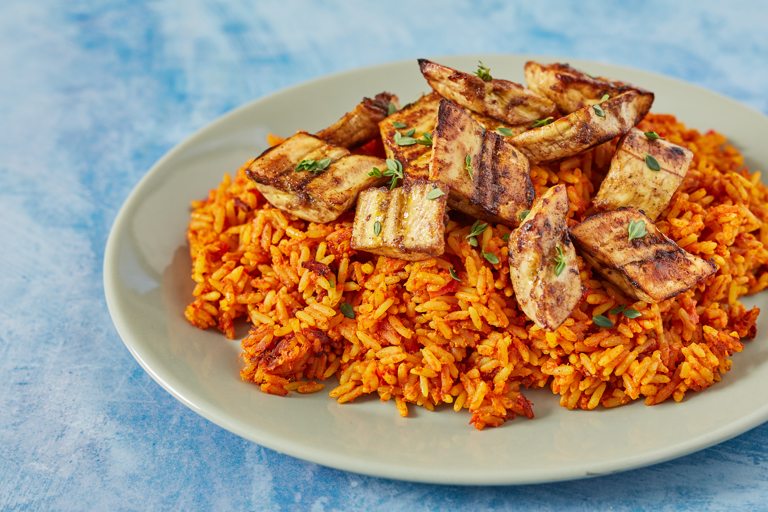
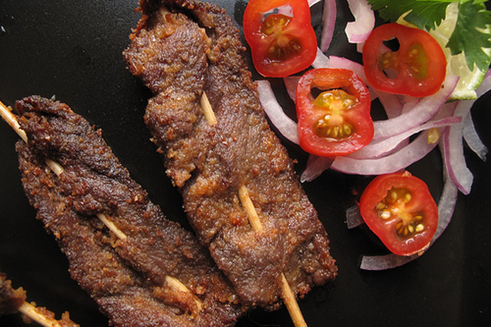

Landforms| Major Waterways| Overall Climate| Resources| Religion| Technology| Government & Politics| Family| Arts & Entertainment| Education| Recreation| Food & Clothing| History| Economy|

Food & clothing:
Nigerian food, like many cuisines in West Africa, is known for being spicy and aromatic with the most popular dish being Jolof Rice. Foods vary from different regions. In Nigeria, in the South, crops such as corn, yams and sweet potatoes form the base of the diet. Fruits such as papaya, pineapples, coconuts, oranges, mangos, and bananas are very popular in the tropical South. Clothing usually revolves around casual attire due to warmth. Traditional clothing includes agbada, which is a robe. A Gele which is a garment for females that is worn around the head. Each tribe has different specialties in their clothing. The Yoruba tribe has special beads stitched onto their clothes. And the Igbo tribe has lion heads stitched onto their pullover shirts.

Jolof rice
